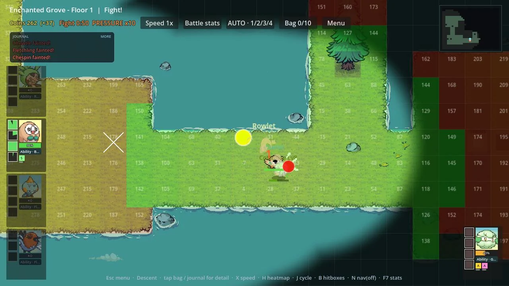

Education & community
Everyone deserves access to quality education.
Arts teaching in Trenton, free tutoring coordination, and mentoring and curriculum for first-generation, lower-income students.
Explore my education work
Artist, engineer, and educator.
I bring disciplines together to make learning more accessible, test ideas, and create for communities.
Arts teaching in Trenton, free tutoring coordination, and mentoring and curriculum for first-generation, lower-income students.
Rubrik / engineering intern / 2022
Evaluated interface barriers, implemented React and TypeScript fixes, and left the team an action plan.
Explore the work & my role
Recorded from the working prototypeDesigned and tested combat AI where training shapes behavior, with heatmaps to inspect positioning. Built with AI-assisted development.
 Clio · restored seated figure
Clio · restored seated figure Whig · restored bird
Whig · restored birdUniversity work / research & restoration
Recovered lost details from historical records and rebuilt damaged seals for official university use.
Compare the source & restoration

Scully / MOL / Class of 1976
Designs rooted in community—from connecting classmates during quarantine to honoring a co-op’s traditions.
Explore the designs & their stories
Princeton Class of 2023 / apparel
Designed for Princeton’s Class of 2023. Worn at Reunions.
See the jacket & its storyKeep in touch
For opportunities, collaborations, or a good conversation.
Perspective / technology & human judgment
As AI lowers some barriers to making things, I think intentionality and authenticity will become more valuable. A polished result matters, but so do the choices behind it: what problem is worth solving, whose needs are being considered, and what gives the work meaning.
I’m interested in the connections between disciplines. Education makes me think about access and how people learn; engineering gives me ways to test ideas; art asks me to pay attention to composition, expression, and the details that change how something feels.
I don’t want efficiency to become the only reason to do something. Drawing, learning, and making can matter because of the experience itself, even when a tool could produce a result faster. There should be room to choose that process without having to justify it in terms of productivity.
I use AI, and I’m also apprehensive about its environmental costs and its implications for well-being, privacy, and job security. Those concerns affect what I want to investigate and how I describe the work.
My early RWKV experiment grew from a narrower question I could explore: what might a different approach to model memory make practical on the hardware I had? It is an unfinished investigation, not evidence that I have solved those broader concerns.
Read about the RWKV experiment → · How I use AI on this site →
Back to the collection ↑Education & community access
Quality education should be accessible to everyone, regardless of income or background. That commitment has guided my work with students, community programs, and learning resources.
As a fellow and visual arts co-lead with Trenton Arts at Princeton, I worked with students from Trenton. Arts education is part of my commitment to making learning opportunities more accessible.
As a site coordinator with the Princeton Online Tutoring Network, I recruited, trained, and matched volunteer tutors with students whose families could not afford tutoring. I also worked with community partners and supervised sessions.
As a fellow and later a head fellow in the Scholars Institute Fellows Program, I mentored underclassmen from first-generation, lower-income backgrounds. We worked through course planning, degree progress, and financial aid, and I connected them with campus offices and support.
At Princeton’s Computer Science Department, I worked with faculty to develop a 12-week introductory Java and Python curriculum with first-generation, lower-income students’ learning needs in mind. I facilitated workshops, gathered feedback, and revised materials for remote delivery.
I currently tutor students in mathematics, SAT preparation, and academic writing. I assess where each student is starting, adapt explanations, and plan practice around their needs.
Back to the collection ↑Rubrik / software engineering intern / June–August 2022
My internship began with fixing accessibility issues in Rubrik’s web product and expanded into a broader front-end accessibility evaluation.
I implemented fixes using React, TypeScript, HTML, and CSS, and documented procedures and recommendations for the team. Alongside the code changes, I prepared an action plan for continuing the accessibility work.
I presented the project to the company. The documentation gave the team a way to continue working through the findings after the internship ended.
This is a summary of my contribution. Internal source code and project materials are not available in this portfolio.
Back to education & engineering ↑Development / Godot 4 / ongoing
My game prototype explores a combat system where training a unit affects its decisions, and players build skillsets that work together. The technical challenge is balancing a robust, flexible system with an experience that is still understandable and enjoyable.
The prototype includes overlays for inspecting movement. These recordings show the existing systems running in the dungeon, with automatic movement active.
Getting through a corridor and choosing where to stand during a fight need different information. The dungeon builds a distance field over walkable cells, then derives directions toward the exploration goal. Combat evaluates positions using the unit’s situation. Keeping both visible helps separate route problems from tactical choices.
Recorded from the ongoing Godot prototype. These excerpts demonstrate the diagnostic views, not a benchmark of optimal behavior. Game sprites and environment assets are third-party artwork; my contribution here is the system design and development process.
An ability that was still recharging could score higher than a ready one, despite a penalty. That left the unit idle for a decision cycle. The current implementation falls back to the best ready skill above a minimum score, so it can act without wasting an ability that has no useful target.
The distinction matters: a preference score describes how attractive an action is; readiness checks determine whether it can actually happen. Adding tactical options also means accounting for the ways those rules interact.
More complex behavior is only useful if it improves play. I’m still evaluating whether the decisions are readable, whether training feels meaningful, and which systems justify their complexity. A working prototype lets me investigate those questions; it does not settle them.
I define the game design and system direction, direct AI-assisted development, and test and iterate on the prototype. It is an ongoing Pokémon fan-game project, not a finished commercial release.
Back to the collection ↑AI / values / an early local experiment
I’m interested in what AI makes possible, and apprehensive about its environmental costs, effects on people’s well-being, privacy, and job security. Using it does not make those concerns disappear.
As AI lowers some barriers to making things, I think intentionality and authenticity will matter more: choosing what to make, why it matters, and what deserves our attention. I also want room to keep learning and making things because the process has meaning, even when the output could be automated.
That concern led me toward RWKV-type models and their different approach to memory. RWKV-7 uses a fixed-size recurrent state during inference. I wanted to explore what that could make practical on the hardware I had. Read the RWKV-7 paper.
My early local experiment used the official RWKV-7 inference package. The test script loads a model, reports allocated and reserved CUDA memory, and inspects the model’s state interface. This is exploratory work with an existing architecture, not a new model I designed.
I’m interested in whether a hybrid approach could keep useful capabilities while easing resource demands. I haven’t built or benchmarked such a hybrid. Lower memory requirements alone would not establish lower energy use or environmental impact, and efficiency would not resolve the other concerns that brought me here.
A useful next step would be a controlled comparison of memory, speed, and output quality on the same hardware and tasks. For now, this project is an unfinished investigation.
Back to the collection ↑Whig–Clio / restoration & vector graphics
This was restoration work with the university for official use. The available Whig–Clio imagery had accumulated heavy artifacts through repeated compression, obscuring and losing parts of the original designs.

I researched older records to understand the original features, then used those references to guide the digital restoration. The work involved recovering details missing from the degraded image while preserving the identity of the historical seals.
I rebuilt the restored artwork in vector form for official use. Vector paths allow the design to scale without magnifying the damaged source pixels. The source and restoration views show the seated figure and the bird: the two seals at the center of this project.
Existing identity and iconography: Whig–Clio. Historical research, digital restoration, and vectorization: Michael Tran. The website displays optimized image previews of the original and restored work.
Back to graphics ↑Graphic design / community & apparel
These projects grew from the communities around me: classmates separated during quarantine, the co-op I called home, and alumni returning for a reunion.
During COVID quarantine, I made a shirt concept for COS. Seeing it give our scattered community something to be excited about, I continued making designs for other majors anonymously.
Someone later reached out to commission the official Molecular Biology Class of 2021 shirt. What began as a personal project for the community had become an opportunity to design something its members would wear.
The cranes reference the paper cranes hanging in our co-op, made by members from previous years. I designed the shirt as a homage to that shared space and the people who had left their mark on it.

A lab-coated tiger and mice bring the department’s subject into the commissioned class shirt.

A reunion graphic combining the class year, the Princeton P, ivy, and the group’s reunion wording. The project also includes logo, patch, and name-tag artwork.
Graphic artwork by Michael Tran. The MOL and reunion images shown here are the artwork, not photographs of the printed garments.
Back to graphics ↑Princeton Class of 2023 / senior jacket
I designed the Class of 2023 senior jacket, worn by classmates during Reunions. Orange tiger linework, ivy, and asymmetrical stripes connect the front, sleeves, and back.
I drew the design on an iPad, looked at earlier class jackets, and gathered classmates’ feedback as it developed. The large orange circle on the back grew from a friend’s suggestion to embrace the playful spirit of the tradition.
Read the May 31, 2023 Princeton Alumni Weekly coverage → The section “The Class of 2023 Debuts Jacket” documents the design and its use at Reunions.
Back to graphics ↑Animation / painted environments
A short scene from my animated film, with a bright flower, small flying insects, and layers of dark foliage framing the clearing.
The orange flower provides a focal point within the muted forest. Dark foreground shapes frame the lighter clearing, while small movements give the scene life without filling every part of the image with activity.
Visual artwork, animation, and compositing by Michael Tran. This excerpt is presented without the film’s soundtrack.
Back to the collection ↑Illustration / ZZZ 2025 Art Fest
Illustration created for ZZZ 2025 Art Fest. Warm lighting, layered environmental details, and expressive character interactions bring a shared meal to life.

These frames come from my drawing timelapse. They show the figure drawing, color blocking, environmental detail, and lighting at different stages, including the working notes left on the canvas.


Illustration by Michael Tran. Characters from Zenless Zone Zero.
Back to the collection ↑Community & graphic design
This shirt artwork brings together origami cranes and lettering for Scully co-op, the Princeton cooperative where I served as co-president.
The cranes pay homage to the paper cranes hanging in our shared space, made by members from previous years.
Explore the apparel collection and its stories →
Scully co-op · shirt artwork
Back to the collection ↑Drawing & applied design

A wave-patterned skateboard design study. The full sheet places the board alongside a reference image and individual wave drawings, showing the pattern at different scales.
The reference print shown in the study is Katsushika Hokusai’s The Great Wave off Kanagawa. The complete sketchbook study is shown here.
Back to the collection ↑